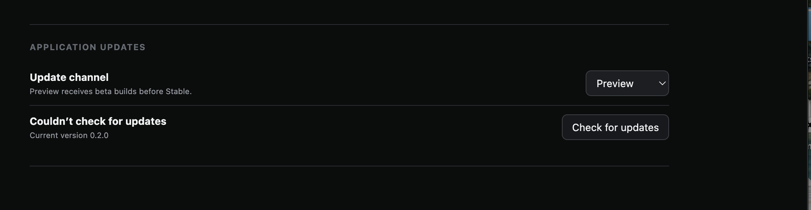
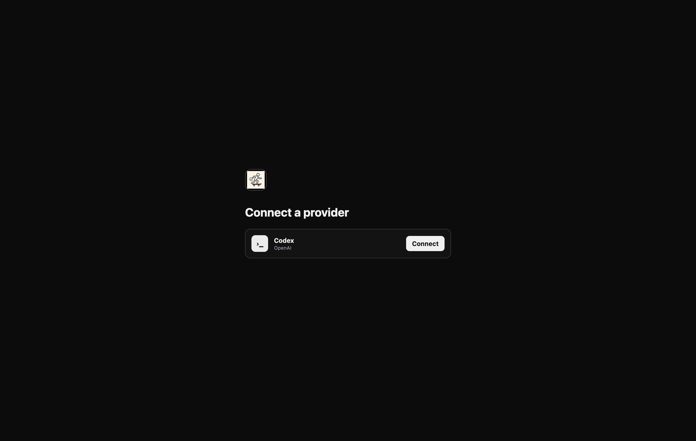

Relayer Desktop and Relayer Harness: Product Requirements
Status: draft for product review Last updated: 2026-08-17
This document specifies two concrete product packages that live in this relayer-graphcomplete repository and ship together as one Relayer product:
- Relayer Desktop: the local-first desktop application that provides projects, threads, providers, persistence, Git/worktrees, the graph interface, updates, evaluation execution, and saved-result replay; and
- Relayer Harness: the graph engine,
complete(inputGraph)implementation, Prime Agent integration, graph tools, and Relayer evaluation suites.
The repository is a monorepo: Relayer Desktop and Relayer Harness have explicit package and runtime boundaries, but V1 does not split them into separate repositories. V1 does not define a general-purpose harness desktop, arbitrary harness plug-ins, or a custom conversation-view framework. Those abstractions are deferred until the concrete Relayer product proves which seams are actually stable. Part I defines the desktop screens and ordinary user flows. Part II defines the Relayer graph engine and Complete boundary. Part III defines the Relayer eval runner, cases, and product replay. Part IV defines desktop packaging, distribution, verification, and V1 acceptance.
1. Product definition and whole-product view
The delivered product is Relayer Desktop running the pinned Relayer Harness bundled with that application release. A user connects an agent credential, creates a no-folder or project-backed chat, optionally selects a Git checkout or new worktree, sends interactions, stops or retries work, navigates accepted history, reopens persisted chats, and installs desktop updates. Each accepted Complete call persists a graph response. Relayer Desktop renders the returned layer as movable icon-title nodes, shows selected-node detail and actions in the right inspector, and lets prior nodes be navigated or attached to later messages.
A harness configuration can ship only when the same immutable configuration has passed its required deterministic tests, live evaluations, saved-result replay, and human visual review defined in Part II.
1.1 One end-to-end flow
flowchart LR
A["Connect agent login"] --> B["Open New thread"]
B --> C{"Choose scope"}
C -->|No folder| D["App-owned local workspace"]
C -->|Project| E["Folder plus optional Git worktree"]
D --> F["Create one user-interaction node"]
E --> F
F --> G["Call complete(inputGraph)"]
G --> H["Harness constructs response through graph tools"]
H --> I["Graph engine validates and commits accepted run output"]
I --> J["Resolve interaction plus run and render exact layer"]
J --> K{"Next user move"}
K -->|Message| F
K -->|Authored node action| F
K -->|Add nodes as context| F
K -->|Navigate history or graph| J
1.2 Concrete monorepo package boundary
flowchart LR
subgraph REPO["relayer-graphcomplete repository"]
subgraph RD["Relayer Desktop package"]
UI["Desktop shell and graph interface"]
AS["Local app server"]
ER["Relayer eval runner, report, and See in App"]
DS["Projects, threads, credentials, Git, persistence, updates"]
end
subgraph RH["Relayer Harness package"]
GE["Stable graph engine package"]
GC["Complete plus Prime Agent implementation"]
ES["Relayer cases, operator, checks, and judge rubric"]
end
end
UI --> AS
AS --> GE
AS --> GC
ER --> ES
ER --> GC
GC --> GE
Relayer Desktop owns the user-facing product:
- local profile and secure credential storage;
- projects, no-folder chats, threads, folder permissions, checkouts, and worktrees;
- app-server lifecycle, composer shell, history navigation, stop/retry, settings, local persistence, recovery, packaging, updates, and release channels;
- the Relayer graph canvas, force layout, parent banner, node inspector, actions, turn navigation, and accessibility behavior;
- the local Relayer evaluation runner, immutable result catalog, report UI, and See in App handoff;
- product capabilities for filesystem, Git, secret references, app data, deep links, and cancellation.
It does not implement agent recursion, decide graph semantics, or own Complete prompts and evaluation rubrics. It renders and interacts with graph state only through the graph engine's stable product APIs.
Relayer Harness owns the graph product:
- the graph engine's schemas, versions, layers, actions, accepted snapshots, persistence, migrations, compatibility, and read/write authority;
- Complete, Prime Agent, IPython state, graph tools/skills, topology policy, search/reuse policy, and repair behavior;
- Relayer-specific cases, deterministic checks, operator tasks, judge rubric, and promotion manifest.
The graph engine remains a stable package boundary inside Relayer Harness. Complete uses its public tool API; Relayer Desktop uses its product read/write APIs through the local app server. Neither reads the journal directly. Package imports and contract tests enforce this boundary even though both packages live in one repository.
1.3 Stable Desktop-to-Harness contract
Relayer Desktop and Relayer Harness integrate through one versioned product boundary:
interface RelayerHarnessClient {
complete(inputGraph: InputGraph, options: CompleteOptions): Promise<CompleteResult>;
stop(runId: string): Promise<void>;
}
type CompleteResult = {
runId: string;
inputNodeId: string;
status: "accepted" | "stopped" | "failed";
retryable: boolean;
acceptedLayerId?: string;
graphVersion: number;
diagnosticRef?: string;
};
Desktop creates the user interaction and context/action relationships through the graph engine, then passes the resulting input graph to complete(inputGraph, options). Complete constructs and submits the response through graph tools. Desktop resolves acceptedLayerId through the graph read API and displays that exact layer. A model turn ending does not produce an accepted result.
The bundled desktop release pins one compatible Relayer Harness package version and refuses incompatible graph schema, graph tool, renderer contract, or harness configuration versions before starting a run.
1.4 Deferred abstraction
V1 does not include arbitrary harness adapters, third-party conversation views, a generic agent protocol, or a public multi-harness conformance kit. The eval system may compare Relayer Harness configurations, Prime Agent versions, and model/provider choices, but every run still exercises the Relayer product contract. A general platform should be reconsidered only after the Relayer Desktop/Harness boundary has shipped and repeated implementations reveal a concrete reusable seam.
2. Canonical visual product reference
The walkthrough is the current product mock. Each scenario must correspond to a requirements subsection directly beneath it in the rendered review site. The optional annotation overlay is review tooling, not product chrome.
2.1 Mock inventory
| Mock | Product decision shown | Contract or implementation it proves |
|---|---|---|
| Agent setup: Codex | Agent login is the primary setup; harness choice is collapsed under Advanced | Provider-independent configuration plus Codex managed login |
| Agent setup: API key | API key reveals provider, secure key entry, and optional provider API URL | Extensible provider credentials without creating a Relayer account |
| New no-folder chat | A chat can start without a project or user folder | User-facing “No folder” choice backed by scope.kind = standalone and an isolated app-owned workspace |
| New project thread | Folder choice lives in New thread, not onboarding | Project creation is inline with the first task |
| Git execution options | Git-only checkout and worktree choices are advanced, contextual options | Non-Git folders remain simple; Git state is not mandatory |
| Graph thread | The accepted opened layer is a force graph with node details on the right | Exact display contract and local graph navigation |
| Add graph context | A selected node can be attached with an optional annotation | Context attachment schema and next Complete request |
| Node action and child thread | Authored actions can navigate or create recursively enterable subthreads | Action invocation contract and recursive graph/thread model |
| Settings | Normal settings are simple; advanced diagnostics remain collapsed | Provider, storage, Git, update, and developer-diagnostic boundaries |
| Desktop update | Signed update is visible, deferrable, and restartable | Required V1 distribution and rollback behavior |
| Eval runner | A developer chooses a case, exact harness/model/judge manifests, runs it, and sees progress plus result actions | Relayer eval runner and Relayer Harness evaluation contract |
| Eval report | A passing run exposes one See in App handoff | Immutable run bundle and local deep-link contract |
| Evaluation thread | The exact graph result opens in the normal renderer under Evaluations | Product-real replay plus continuation pinned to the tested harness configuration |
2.2 Visual acceptance rule
Every user-visible requirement needs structural UI assertions plus a rendered screenshot or saved-result replay in this UX. Schema validation alone does not satisfy visual acceptance.
2.3 Slice 1 delivery checkpoint — desktop front door
Slice 1 is the desktop front door: provider setup through Codex, entry into the desktop shell, full-page Settings, appearance/sidebar behavior, and the New Thread scope surface. The app-server continuation now adds desktop-owned project/thread storage and a product-verified first standalone thread. It does not claim that the complete project/Git workflow, agent execution, or graph interaction works in the product.
VerifiedPartialOpenNext sliceDeferred
Status is based on product proof, not code presence. Verified requires automated coverage plus a screenshot for visible behavior. Partial means a visible surface or underlying component exists but the end-to-end behavior is not proven. Open is unfinished work within the stated Slice 1 boundary. Deferred remains a future PRD requirement outside this slice.
Current result: the app can be visually exercised from fresh provider setup through creation and restart recovery of a desktop-owned No folder thread. The largest remaining desktop gaps are complete project/folder/Git handling and the broader thread-management actions. Agent execution and graph output remain deliberately separate.
| Product requirement | Status | What is proven now | What remains |
|---|---|---|---|
| Codex provider setup: normal and abandoned-auth flows | Verified | Disconnected, authorization-pending with Open again, successful connection, and connected restart are covered by one compact lifecycle scenario and four Electron screenshots in Section 3.6. | Explicit rejection, expiration, and later credential revocation are tracked separately below; real authentication needs a signed-release smoke. |
| Desktop shell and appearance | Verified | Light and dark provider setup, Relayer branding, expanded shell, and the collapsed-sidebar layout are structurally tested and visually captured. | Keyboard navigation, accessibility, small-window layout, and restart persistence remain broader desktop requirements. |
| Full-page Settings surface | Partial | Full-page layout, theme selector, connected Codex row, Disconnect control, channel selector, and update control are structurally tested and captured in SET-001-E1. |
Disconnect/reconnect behavior and retention of local data are not verified. Advanced project, storage, Git, and provider settings are not built. |
| New Thread entry and scope menu | Partial | The connected landing page, composer, explicit No folder state, and Open another folder choice are structurally tested and captured in SCP-001-E1 and SCP-001-E2. |
Folder picker completion, project creation/selection, Git detection, and local-checkout/new-worktree choice need choice-driven product tests and screenshots. |
| Create and persist the first thread | Verified | The Electron desktop creates a No folder thread through the Rust app server, lists it in Chats, and restores the same title, scope, and first interaction after a process restart. APP-001-E1 and APP-001-E2 show the two product states; the Rust integration scenario proves database reopen. |
Project-backed visual proof, unsent-draft recovery, rename/archive/pin/delete, and interrupted-write recovery remain separate requirements. |
| Provider failure edges | Open | Abandoned authorization and rapid replacement are covered. | Add compact coverage for explicit authorization rejection, credential expiration/revocation on a later launch, and recovery without freezing the setup page. |
| Desktop updater and distributable packaging | Partial | An unsigned development package builds; a real 0.2.0 Apple Silicon candidate is signed, notarized, stapled, Gatekeeper-accepted, and captured; the Preview publisher and protected tag/OIDC infrastructure are implemented and deterministically tested. |
The protected CI signing and notarization credentials are configured, but the workflow has not run and the bucket remains empty. No hosted update, previous-version upgrade, visible packaged updater flow, Stable promotion, or rollback has been product-proven. Section 5.7 defines the remaining slice. |
| Relayer login and additional providers | Deferred | Future product requirements remain documented. | Relayer account login, API-key login, additional providers, custom URLs, secure key storage, connection tests, and model listing are outside Slice 1. |
| Harness execution, graph output, and graph interactions | Deferred | Experimental harness, graph, and eval work is separate engineering evidence and is not counted as desktop proof. | Invocation, stop/retry, accepted graph rendering, node details, context attachment, actions, subthreads, turns, and graph persistence belong to later slices. |
2.4 App-server and persistence delivery checkpoint
This checkpoint maps the current Rust app-server PR to the product requirements and implementation boundaries it actually proves. The status label and the matching row color are intentionally redundant so the table remains readable without relying on color alone.
MetPartially metNot metOut of scope
| Requirement | Status | Evidence in this PR | Remaining work |
|---|---|---|---|
| Electron owns the Rust app-server lifecycle | Met | Electron starts one bundled or development server, sends its control token through child standard input rather than process arguments, keeps that pipe open as the parent-ownership signal, accepts only its authenticated loopback readiness message, and stops it during shutdown. The Rust server also exits when the pipe closes after an Electron exit or crash. Failed startup and normal shutdown wait for process exit, escalating from SIGTERM to SIGKILL after a bounded grace period. If the child exits unexpectedly, the desktop shows an actionable error and closes instead of leaving an unusable window. A real-binary integration test closes the parent pipe and requires the server to exit promptly. |
Release signing and a clean-machine packaged smoke belong to distribution validation. |
| App-server responsibilities have explicit production boundaries | Met | RelayerAppServer composes four visible layers: server lifecycle, HTTP API, product service, and SQLite product storage. HTTP handlers own authentication and wire formats; the product service owns typed IDs, validation, and product operations; SQLite storage owns SQL, transactions, connection policy, and embedded migrations. The public Rust library exposes only the server boundary needed by the executable and integration test. |
Graph core, harness hosting, credential propagation, and their integration boundaries remain intentionally absent. Split the product layer by feature only when additional product areas make the current project/thread service too broad. |
| PR #4 remains independent from graph core and the harness | Met | The product-state response exposes projects, threads, and interactions chronology with graph: false and harness: false. It does not synthesize nodes, edges, status, or a second graph-node identifier. |
A later integration PR will have graph core create the canonical user-interaction node with the same integer identity inside the app server's SQLite transaction. |
| Product SQLite stores project metadata and atomically creates a thread with its first chronology entry | Met | One Rust integration scenario creates a project plus project-backed and standalone threads, races duplicate project creation, concurrently appends interactions against a future thread timestamp, forces equal thread timestamps, closes the store, reopens the same database, and reads the same records. It proves one project creation winner, contiguous interaction sequence numbers, nondecreasing interaction timestamps, deterministic newest-thread selection, and positive integer IDs. Thread and first-interaction creation share one transaction. The app server permits only SQLx-managed predecessor schemas into embedded migrations, then validates exact columns, full unique indexes, foreign keys, and the required root interaction before accepting the database. | Canonical graph nodes, graph snapshots, attempts, drafts, later schema upgrades beyond the initial version, export, and recovery from an operating-system interruption are not represented yet. |
SCP-001: first send requires non-empty text and creates a desktop-owned thread |
Met | The send control is disabled for empty input. A valid send creates the thread and first product interaction chronology record through the Rust API without invoking a harness or synthesizing a graph node. Repeated click or keyboard submission while that request is pending is coalesced into one creation. | Project-scope validity will need additional UI rules when project selection is completed. |
| Create, persist, and reopen the first No folder thread | Met | APP-001-E1 shows the created thread. APP-001-E2 shows the same isolated profile after Electron and the app server were stopped and restarted. The database integration scenario supplies the automated persistence proof. |
Unsent drafts and interrupted-write recovery are not proven. |
SCP-002: No folder is a standalone scope |
Partially met | The stored thread has no projectId, and the desktop displays it under Chats with No folder. |
The required isolated app-owned working directory is not created yet. |
SCP-003: project identity and duplicate-folder behavior |
Partially met | Projects receive stable IDs and canonical folder paths. Concurrent creation of the same canonical folder has one atomic winner; later attempts return a conflict instead of an internal error. The desktop asks before explicitly reusing the existing project. Missing folders return an actionable error. | The folder picker, visible confirmation/recovery proof, authorized-folder lifecycle, and populated project sidebar are not complete. |
SCP-004–SCP-006: Git and worktree choices |
Not met | No Git or worktree behavior is claimed by this PR. | Add Git detection, Local checkout/New worktree choice, failure recovery, and exact execution-location persistence. |
SCP-007–SCP-009: thread management |
Partially met | Create, list, select, and reopen are present for the initial thread shape. | Fork, rename, archive, pin, delete-entry, move-to-project, and graph-reference preservation are not implemented. |
| Section 5.2 local persistence and recovery | Partially met | Projects, threads, and product interaction text use local SQLite storage and survive a real process restart. Thread plus first interaction creation is transactional; concurrent later interactions serialize sequence allocation. The initial product schema is installed and structurally validated by versioned migration code owned by SQLite storage, and incompatible pre-existing tables prevent startup. | Settings, credential references, graph data, accepted states, execution state, update state, a real later-version migration, and crash recovery remain. |
| Packaged local app-server artifact | Met | The development and release commands explicitly compile the Rust server for aarch64-apple-darwin and package Electron for arm64. An afterPack check rejects a nested server with any other architecture, and signed verification repeats that check. APP-001-E3 is a launch smoke of the packaged .app with an isolated profile. |
Intel Mac support is explicitly deferred. Signing, notarization, clean-machine installation, update feed, and previous-version upgrade remain release work. |
| Credentials, harness invocation, graph engine, and response graph | Out of scope | The desktop explicitly says agent execution is not connected. This PR neither starts Prime Agent nor claims graph behavior. | Integrate these only through their later product contracts. |
APP-001-E1 — first standalone thread created
Captured from the unsigned packaged Relayer Dev.app using an isolated product profile. The existing Codex connection was used only to pass the current provider gate; no harness was started.
 1
2
3
4
1
2
3
4
- 1The newly created thread appears under Chats.
- 2The durable header records the thread title and No folder scope.
- 3The first user interaction is rendered from product data.
- 4The product states that agent execution is not connected; no harness result is implied.
APP-001-E2 — same thread reopened after restart
Captured after stopping both Electron and its Rust app server, then launching them again against the same isolated profile. The title, No folder scope, sidebar entry, and first interaction were restored from product SQLite.
 1
2
3
4
1
2
3
4
- 1The persisted thread returns to Chats after restart.
- 2The same title and No folder scope are restored.
- 3The same first interaction is read from the reopened database.
- 4The harness boundary remains visibly deferred after recovery.
APP-001-E3 — packaged arm64 application starts its bundled server
Captured from the unsigned local Relayer Dev.app produced by npm run desktop:pack, using an isolated empty profile. The page origin was the ephemeral loopback address reported by the bundled Rust executable.
 1
2
1
2
- 1The packaged application reaches the normal first-launch product screen.
- 2The bundled server serves the focused Codex provider choice; agent execution is not involved.
Part I — Desktop chat application
3. Agent setup and credentials
3.1 First launch
Relayer has no product account in V1. It uses one implicit local profile. First launch opens Agent setup and, after a valid configuration is saved, opens the normal New thread window. Folder and project choice are not onboarding steps.
The setup surface is one focused Agent login card. Codex and API key are presented as horizontal login-method choices, followed by the credential and model controls for the selected method. The form should not split setup into equal Harness and Agent login columns or stack alternative methods into a long vertical option list.
An Advanced disclosure below the ordinary login controls contains the harness selector and its short explanation. Prime Agent is the only enabled V1 harness, and it is preselected. Harness selection is a new-thread default: changing it never changes an existing thread. The persisted value is a stable harness identifier rather than a hard-coded UI assumption, but a first-time user does not need to understand harness architecture to connect an agent.
3.2 Login methods
Codex
Connect Codexstarts the managed ChatGPT/Codex browser authentication flow.- The credential is an agent credential, not a Relayer identity.
- Successful authentication populates compatible model choices.
- Expired or revoked authentication returns the user to Agent setup without losing projects, threads, or graphs.
API key
- Choosing API key reveals a provider selector.
- Known providers can prefill their default API URL.
Otherreveals a required provider name and API base URL.- The API key field is masked, supports paste, and is never written to logs, graph data, chat history, annotations, exports, or diagnostics.
- The key is stored in the operating-system credential store. Product settings persist only a credential reference.
- A
Test connectionaction verifies authentication and model listing without invoking Complete. - The model selector is enabled only after the credential test succeeds.
3.3 Configuration schema
type AgentConfiguration = {
harnessId: string;
harnessVersion: string;
loginMethod: "codex" | "api-key";
providerId: string;
providerApiUrl?: string;
credentialRef: string;
modelId: string;
};
type ThreadAgentBinding = {
threadRootInteractionId: string;
harnessId: string;
harnessVersion: string;
};
type InteractionModelBinding = {
interactionNodeId: string;
providerId: string;
credentialRef: string;
modelId: string;
};
The harness binding is written when the thread's root interaction is created and is inherited by every interaction in that thread. The model picker remains available in the composer and may change before any interaction. Every submitted interaction records the exact provider, credential reference, and model used for that call.
3.4 Product requirements
- AGT-001: No Relayer sign-up, sign-in, avatar, cloud-sync promise, or Sign out action appears in V1.
- AGT-002: Agent login is the primary setup task; harness selection is available only inside a collapsed Advanced disclosure.
- AGT-003: Prime Agent is the preselected and only enabled V1 harness; its advanced selector remains present so the persisted product contract is not designed around a permanent singleton. A harness change applies only to newly created threads.
- AGT-004: Codex and API key are the enabled V1 login methods.
- AGT-005: Provider-specific controls appear only after API key is chosen.
- AGT-006:
Otherrequires provider name and a valid HTTPS API URL, except explicitly permitted local development URLs in developer mode. - AGT-007: Secrets are stored through the OS credential store and are redacted from every persistence and diagnostic path.
- AGT-008: Continue is disabled until the preselected or advanced-selected harness, credential, provider, and initial model form a valid configuration.
- AGT-009: The composer exposes the model for the next interaction. Changing it affects that interaction and later defaults, never prior interaction records.
- AGT-010: An existing thread cannot switch harnesses in place. To use a different harness, the user starts or forks into a new thread.
3.5 Verification
Deterministic choice-driven UI tests cover every selector transition, conditional field, validation error, disabled state, secure-storage adapter call, and secret-redaction path. Credential-adapter integration tests use fake Codex and provider servers. One opt-in real authentication smoke is run before a signed release; it does not enter the default suite and does not execute a paid Complete call.
3.6 Current delivery evidence — PROV-001 Provider setup
PROV-001 is one product requirement with several observable subrequirements, not a collection of independent setup features:
- when no agent provider is connected, Relayer displays the full-page provider setup;
- Codex is the first enabled provider while the product contract retains future Relayer login and additional providers;
- Connect opens the hosted Codex authorization flow;
- abandoning that flow leaves an Open again action that replaces the old authorization attempt rather than freezing the page;
- successful authorization enters the normal New Thread application; and
- a later desktop process recognizes the existing Relayer-scoped Codex connection.
| Requirement | Sprint 1 status | Automated proof | Visual proof | Remaining work |
|---|---|---|---|---|
PROV-001 Provider setup and its Codex subrequirements |
Verified | test/desktop-shell.test.mjs has one structural desktop scenario and one provider-lifecycle scenario. The lifecycle scenario covers disconnected account read, two rapid Connect calls, cancellation-before-replacement, completion notification, connected account read, request timeout, and app-server interruption. |
PROV-001-E1 through PROV-001-E4 below |
Explicit rejected/expired/revoked-credential copy and behavior; signed-release real-auth smoke. Relayer login, API keys, additional providers, provider URLs, secure secret storage, model listing, and harness selection remain planned after Sprint 1. |
The default validation command remains fast: on 2026-08-17, npm run check completed with 2 test files and 10 tests passing, and npm run build passed. Only the desktop structure and provider-lifecycle scenarios are provider-setup evidence; GraphComplete contract tests must not be counted as proof of this desktop flow.
PROV-001-E1 — disconnected provider setup, dark appearance
Captured from the Electron development application with an isolated empty Relayer profile. This proves the full-page setup, Relayer branding, Codex as the first provider, and the initial Connect action.
 1
2
3
1
2
3
- 1One full-page provider task, without project or harness setup.
- 2Codex is the first enabled provider; OpenAI is named as its source.
- 3Connect is the only initial action.
PROV-001-E2 — disconnected provider setup, light appearance
Captured from the same Electron application and isolated profile after persisting the light appearance. This proves that provider setup participates in the desktop appearance setting.
 1
2
3
1
2
3
- 1The same provider hierarchy is preserved in light appearance.
- 2The card, logo, and text use the light Relayer palette.
- 3The primary action retains clear contrast.
PROV-001-E3 — authorization pending and recoverable
Captured after starting the real hosted Codex authorization flow. The desktop remains actionable and exposes Open again; the compact lifecycle test proves that selecting it cancels the previous login ID before starting its replacement.
 1
2
1
2
- 1Open again remains enabled after the browser flow is abandoned.
- 2The status says where completion happens without adding agent-runtime language.
PROV-001-E4 — connected account recognized by a new desktop process
Captured from a newly launched Electron development process using the existing Relayer-scoped Codex profile. It bypasses provider setup and opens the normal New Thread surface. The image proves startup presentation, not agent invocation or graph behavior.
 1
2
3
1
2
3
- 1Connected restart enters the desktop shell rather than provider setup.
- 2New Thread is immediately available from the sidebar.
- 3The ordinary task composer is the post-login destination.
The numbered callouts above are the evidence metadata and requirement associations. Screenshots are implementation evidence, not design mocks and not proof of unrelated features visible in the frame.
4. Projects, no-folder chats, and Git execution
4.1 New thread is the project entry point
After Agent setup, Relayer opens the ordinary New thread composer. The user writes a task and chooses one of these scopes before sending:
| Scope | Stored ontology | Filesystem behavior | Sidebar placement |
|---|---|---|---|
| No folder | scope.kind = "standalone", no projectId |
Isolated app-owned working directory; no user-folder access | Chats group |
| Existing project | scope.kind = "project", stable projectId |
Uses the project's authorized folder or chosen worktree | Under the project |
| Open another folder | Creates a project, then selects it | Requests folder access and records canonical path metadata | New project group |
The folder control initially reads Open folder. Opening it shows existing projects, Choose another folder…, and No folder. “Standalone” remains an internal scope name only; it is not user-facing terminology.
The first send creates one top-level user-interaction node. The thread's identity points to that root interaction node; the product does not create a separate semantic thread node for the same event.
4.2 Folder and project behavior
- Any local folder can be a project. Git is detected capability, not a requirement.
- Reopening an existing canonical folder reuses the project after confirmation instead of silently duplicating it.
- Missing or revoked folder access keeps the project and history visible while prompting the user to relocate or reauthorize the folder.
- Removing a project from Relayer never deletes the user folder or worktree.
- A no-folder chat can be moved into an existing or newly created project when the work grows. This changes the thread's scope and sidebar placement in place; it does not create a second thread, change its root interaction ID, or discard its graph history.
- Moving into a project affects subsequent interactions. Previously accepted turns retain the standalone scope and filesystem binding recorded when they ran.
4.3 Git-aware execution options
When the selected project is a Git repository, an execution control appears beside the folder control:
- Local checkout: use the opened folder and its current branch.
- New worktree: choose a base branch, create an isolated worktree, and start the thread there. V1 exposes only Local checkout and New worktree, matching the compact Codex-style decision. Base-branch, custom-location, and existing-worktree controls are deferred until a demonstrated product need. Non-Git folders do not show Git controls or empty Git status.
Forking a thread can keep its current execution location or create a new worktree. The new interaction inherits the conversation graph and project ontology while retaining its own thread-specific history.
4.4 Requirements
- SCP-001: Send is disabled until the composer has text and a valid No folder or project scope.
- SCP-002: No folder never receives a user folder path by implication; the stored internal scope remains
standalone. - SCP-003: Project scope always resolves through a stable
projectId; display names and paths are metadata, not identity. - SCP-004: Git controls appear only when Git detection succeeds.
- SCP-005: Worktree creation errors leave the draft intact and offer retry or Local checkout.
- SCP-006: The Complete request records the exact project, checkout/worktree, and repository state selected at send time.
- SCP-007: New thread, fork, rename, archive, pin, delete-entry, and reopen actions are available from expected sidebar or thread menus.
- SCP-008: Deleting a thread entry never deletes graph nodes referenced by another thread or turn.
- SCP-009: Moving a no-folder chat into a project preserves thread and graph identity, records the scope transition, and uses the selected project only for later interactions.
4.5 Verification
Choice-driven tests cover No folder, existing folder, new folder, non-Git folder, Git local checkout, new worktree, creation failure, revoked folder permission, duplicate project, move-to-project, fork-in-place, and fork-to-worktree. Filesystem and Git tests use temporary repositories and never modify a user's real checkout.
4.6 Current delivery evidence — New Thread and scope selection
| Requirement group | Current state | Automated proof | Visual proof | Remaining work |
|---|---|---|---|---|
| New Thread shell and initial No folder/folder choice | Partial | The structural desktop scenario asserts New Thread, scopeButton, scopeMenu, and disabled empty send. The Rust integration scenario proves atomic thread/interaction creation and database reopen. |
SCP-001-E1, SCP-001-E2, APP-001-E1, and APP-001-E2 |
No folder create/reopen is verified. Existing-project population, folder-dialog completion, Git detection, and local/new-worktree choice remain unverified, so the overall requirement group stays partial. |
SCP-001-E1 — connected New Thread
 1
2
3
4
1
2
3
4
- 1New Thread remains available beside Chats and Projects.
- 2One task composer is the primary page action.
- 3No folder is the explicit initial scope.
- 4The send control is inline with the composer.
SCP-001-E2 — inline scope choice
 1
2
3
1
2
3
- 1No folder keeps work in an app-owned local directory.
- 2Open another folder begins local project creation.
- 3Scope choice stays inside New Thread rather than onboarding.
5. Desktop shell, persistence, settings, and updates
5.1 Persistent shell and thread management
The left sidebar contains New thread, no-folder chats under the user-facing Chats label, projects with durable thread entries, and two compact footer icons: Settings on the left and Download update on the right when an update is available. It is a compact entry list, not a recursive graph tree. A child or subchild conversation can become a resumable sidebar entry without reproducing its full ancestry there; ancestry remains visible through graph breadcrumbs.
The header shows the current thread title, scope, and backward/forward turn controls. The composer remains the place to send, stop, and attach context. There is no separate active run dashboard.
5.2 Local persistence and recovery
Product data is local and disk-persisted:
- profile and non-secret settings;
- provider configuration references;
- projects and authorized-folder metadata;
- thread/sidebar projection;
- user-interaction nodes, graph data, accepted snapshots, and execution status;
- update state and schema version;
- optional developer traces when explicitly enabled.
Persistence uses atomic writes or transactions. A crash may interrupt an in-progress Complete call, but it must not corrupt the last accepted graph. On reopen, accepted turns render immediately; an interrupted interaction is marked stopped or failed and retryable. Recovery is a reliability requirement, not a primary product concept or prominent settings category.
5.3 Settings information architecture
Normal settings contain:
- Agent: harness, login method, provider, model, reconnect, replace API key.
- Projects and storage: local data location, export, and remove-local-data actions.
- Git: default execution choice, worktree location, and the maximum number of worktrees Relayer may create; visible only when meaningful.
- Updates: current version, channel, automatic download preference, and Check for updates.
- Appearance and behavior: theme and ordinary desktop preferences.
An Advanced disclosure contains:
- provider API URL overrides;
- graph/store diagnostics;
- agent traces, disabled by default and labeled for Relayer developers;
- local development update channel and other developer-only switches.
There is no workspace graph build setting in V1. Graph memory is built through Complete interactions, not through a required up-front workspace indexing operation.
The worktree limit applies only to worktrees created and managed by Relayer. User-created worktrees do not count toward it and are never deleted by Relayer. The exact default, whether the limit is global or per project, and the user flow when the limit is reached remain open in Section 14.3.
5.4 Desktop application updates
Signed desktop updates are essential V1 distribution infrastructure.
- The app checks a configured HTTPS release channel for a signed manifest.
- It compares version and schema compatibility without blocking the user.
- It downloads in the background and verifies hash and publisher signature.
- When an update is available, a small highlighted circular download icon appears at the bottom-right of the sidebar. No version number or update label is permanently shown.
- Clicking the icon opens one compact prompt describing the update with a single
Download updateaction and a dismiss control. - Download and verification occur without blocking chat. Installation is deferred while Complete is committing graph work.
- Before installation, product state is flushed and the target migration is prepared. Activation is atomic; failed startup health or migration restores the prior binary and preserves local data.
5.5 Verification
Event-driven tests cover every persistence and UI state transition: app launch, thread reopen, interrupted write, stopped run, retry, settings disclosure, trace enablement, update unavailable/downloading/verified/restart-deferred/activated/rolled-back, corrupt manifest, signature failure, offline check, and migration failure. Every release also performs a signed previous-version-to-current desktop smoke on the supported macOS versions.
5.6 Current delivery evidence — Settings and shell
| Requirement group | Current state | Automated proof | Visual proof | Remaining work |
|---|---|---|---|---|
| Full-page Settings | Partial | The structural desktop scenario asserts the Settings page, appearance selector, disconnect action, update channel, and absence of a nested dialog. | SET-001-E1 below |
Disconnect/reconnect behavior and retained product data are not yet covered. Advanced settings, project/storage controls, Git/worktree limits, and provider replacement remain unbuilt. |
| Collapsible persistent shell | Verified | The same structural scenario asserts collapseSidebar; current visual evidence proves both expanded and collapsed states. |
SHL-001-E1 below |
Keyboard, accessibility, restart persistence, small-window layout, and populated project/thread lists remain broader desktop requirements. |
| Application updater | Partial | One updater scenario covers check, available, download, ready, and install without network access. The release scenarios cover identity, version, channel, credentials, manifest sealing, final ZIP reconstruction, checksums, receipts, tamper rejection, tag provenance, immutable publication keys, conditional writes, retry recovery, downgrade rejection, and same-version byte-replacement rejection. | UPD-002-E1 proves the real signed and notarized 0.2.0 packaged app launches with an isolated profile. |
The Preview AWS role, protected GitHub environments, and CI signing/notarization credentials are configured, but the feed is intentionally still empty. A CI-signed candidate run, hosted Preview publication, real download/restart installation, Stable promotion, and rollback remain undone. |
SET-001-E1 — full-page Settings
The capture uses a generic connected-account label so personal account identity is not stored in the repository. All other visible state comes from the Electron renderer.
 1
2
3
4
5
6
1
2
3
4
5
6
- 1Settings occupies the main view; it is not a window inside the app.
- 2Appearance is an ordinary top-level setting.
- 3The connected Codex state is visible without making it a Relayer identity.
- 4Disconnect is an account-connection action; its data-retention behavior remains to be verified.
- 5Stable and Preview are explicit update channels.
- 6Development builds state that updates are disabled while retaining the check control.
SHL-001-E1 — collapsed sidebar
 1
2
3
1
2
3
- 1The collapse control stays beside the macOS window controls.
- 2Relayer, New Thread, and Settings remain reachable as compact icons.
- 3The main task surface expands into the released sidebar space.
5.7 Proposed Slice 2 — packaged desktop and updates
The next slice turns the existing development shell into a safely installable and updateable macOS arm64 product. It does not add project/thread persistence, invoke a harness, or render graph output.
Current checkpoint: the release identity and artifact contract, local signed/notarized 0.2.0 proof, immutable Preview publisher, protected GitHub environments, CI signing/notarization credentials, and narrow AWS OIDC role are complete. The PKCS#12 was verified through an isolated Keychain import before its encrypted GitHub secrets were stored, and the temporary export was deleted. No release objects have been uploaded. After review and merge, the first controlled tag can prove hosted 0.2.0, followed by 0.2.1 as the real in-app update.
Partial — signed check verified, product update unverified
Desktop update delivery status
Status reflects saved proof, not the presence of implementation code.
3 verified · 1 ready · 2 open · 1 deferred
main yet.Current visual proof

1 2 3403. 3 is the retry control. This does not prove download or restart.
1 2 3Slice boundary
| In scope | Explicitly out of scope |
|---|---|
| Fast unsigned local package for developer visual testing | Harness selection or agent execution |
| Signed, notarized Preview artifact for external beta testing | Complete, graph output, or graph interaction |
| Stable and Preview release identities/channels | Project/worktree completion and thread persistence |
| Hosted update artifact and channel manifest | Universal/Intel macOS support |
| In-app check, available, download progress, ready, restart, success, and retryable failure states | Full data-schema migration and failed-migration rollback, which require the persistence slice |
| Previous-Preview-version to current-Preview-version update smoke | Stable public promotion before Preview is proven |
Release decisions
- Product continuity: Preview and Stable are channels for the same
ai.relayer.desktopapplication. Unsigned local packages useai.relayer.desktop.developmentand can coexist with the signed app. The first signed seed is0.2.0;0.2.1is the first real update proof. - Artifact host: DMG, ZIP, checksums, receipts, and
latest/betametadata usehttps://updates.relayerlabs.ai/desktop/macos/arm64. Versioned artifacts are immutable; channel metadata is written last. - Signing automation: release builds use the existing Developer ID Application identity for Apple team
NZ253AL7U6and App Store Connect notarization credentials supplied locally or through a protected GitHub environment. Secrets are never stored in the repository. - Update prompt timing: use the existing compact sidebar indicator; downloading is user-triggered, and restart remains explicitly deferrable.
- Minimum supported macOS: V1 supports Apple Silicon on macOS 13 or newer. Release evidence records the floor and validates both identity and architecture.
Minimal validation plan
| Validation | Fast path | Product/release proof |
|---|---|---|
| Updater state machine | Keep one scenario-driven fake-updater test covering no update, available, progress, ready, install request, failure, and retry. No network and no additional test per event. | Screenshots of the actual packaged app in available, downloading, ready-to-restart, and failure states. |
| Unsigned developer package | Build once and inspect the packaged file inventory, bundle identity, icon, and version. | Launch with an isolated profile and capture Settings/About evidence; never present it as a distributable build. |
| Signed Preview package | Verify signing, hardened runtime, notarization, stapling, Gatekeeper acceptance, update ZIP, and checksums with release scripts. | Install the DMG on a clean macOS user, launch it, connect Codex or use a prepared non-secret test profile, and capture the installed app. |
| Real update | Generate two small Preview versions and publish only to the Preview feed. | Install N-1, change a harmless local preference, update through the UI to N, relaunch, and prove the new version plus preserved preference. No harness call is required. |
| Failure safety | Serve an offline feed, missing manifest, and invalid/tampered artifact through one fixture-driven integration scenario. | The packaged app remains launchable on the old version, presents a retryable error, and does not lose the test preference. |
UPD-002-E1 — signed Preview 0.2.0 launch
This is the actual Developer-ID-signed and Apple-notarized arm64 application built from commit 4e5b9c3d21d2c7bbf902313d655f8e70aac30e75, launched with an empty isolated profile. Gatekeeper accepted the app, stapler validated both the application and DMG, and the generated release receipt seals the post-stapling DMG and final updater ZIP hashes and regenerated blockmaps.
See the annotated packaged-launch screenshot in Current visual proof above.
Machine-readable evidence: assets/evidence/desktop/signed-preview-0.2.0-release.json.
UPD-002-E2 — signed Preview feed check
A fresh Developer-ID-signed arm64 build from commit 3fb0e658706fd0fd3cc5993b3f353c6f4e1b6a84 was launched with an isolated profile. Its packaged updater selected Preview, requested the sealed beta-mac.yml URL, received the expected 403 AccessDenied while no Preview release is published, and left the application usable with a concise retry state. The screenshot above is from that signed application, not Electron development mode. This local evidence does not claim a fresh notarization or a successful N-1 to N update.
Machine-readable evidence: assets/evidence/desktop/signed-preview-0.2.0-updater-empty-feed.json.
Slice 2 is complete only when the real packaged Preview app—not Electron development mode—installs through macOS, shows the expected Relayer branding, updates from N-1 to N through the visible product flow, preserves its local preference, and leaves the old version usable after a rejected update. Every manually inspected state receives an annotated screenshot in this PRD.
Part II — Relayer graph engine and Complete harness
6. Graph engine: stable product contract
The graph engine is a stable deterministic package inside Relayer Harness and is the only API that reads or changes persisted Relayer graph state. Complete and Relayer Desktop are separate clients of this engine. Neither reads the JSONL journal directly or invents compatibility behavior. Relayer Desktop sees the graph only through the engine's product read/write contracts.
6.1 Engine ownership
The engine owns:
- node, undirected edge, layer, action, scope, graph-version, and accepted-snapshot schemas;
- append-only persistence, replay, optimistic version checks, atomic commit, and migration;
- deterministic integrity and authority validation;
- typed traversal, lookup, and search primitives;
- draft versus submitted state and accepted versus stopped outcomes;
- the mapping from an interaction plus Complete run to its accepted output layer;
- compatibility checks across graph schema, graph-tool, renderer, and harness versions.
The engine does not decide what an answer should say, which concepts deserve nodes, whether an old concept is relevant, or when recursive agents are useful. Those are harness decisions.
6.2 Stable graph schema required by the product
type GraphNode = {
id: string;
revision: number;
kind: string;
semanticKey?: string;
icon: string;
title: string;
detail: string;
status: "draft" | "accepted" | "stopped";
metadata?: Record<string, JsonValue>;
};
type GraphEdge = {
id: string;
revision: number;
kind: string;
endpoints: readonly [string, string];
metadata?: Record<string, JsonValue>;
};
type GraphLayer = {
id: string;
ownerNodeId: string;
nodeIds: string[];
graphVersion: number;
};
semanticKey is optional for ordinary product display but required when a harness wants stable reuse and when an evaluation must select a generated node without depending on its title or random ID. Edges are stored and displayed without arrow direction. Directional behavior belongs in explicit fields such as an action target or layer owner rather than visual edge direction.
6.3 UX read contract
interface ProductGraphReadApi {
getNode(nodeId: string, snapshotVersion?: number): Promise<GraphNode>;
getLayer(layerId: string, snapshotVersion?: number): Promise<GraphLayerView>;
getNodeActions(nodeId: string, snapshotVersion?: number): Promise<NodeAction[]>;
getCompletionOutput(inputNodeId: string, runId: string): Promise<{
actionId: string;
layerId: string;
graphVersion: number;
}>;
listAcceptedTurns(threadRootId: string): Promise<AcceptedTurn[]>;
}
The renderer receives a resolved layer view containing its exact nodes, induced edges, breadcrumb owner, and accepted snapshot version. It does not traverse the graph to guess what belongs on screen. If one interaction has multiple attempts or accepted children, runId selects the exact completion output.
6.4 Product write contract
interface ProductGraphWriteApi {
createInteraction(input: CreateInteractionInput): Promise<UserInteractionNode>;
attachContext(inputNodeId: string, attachment: ContextAttachment): Promise<void>;
invokeAction(sourceNodeId: string, actionId: string, text?: string): Promise<UserInteractionNode>;
}
The product may create user-interaction nodes and their user-selected attachment or action-reference relationships. It cannot create agent answer nodes, modify accepted answer content, submit scopes, or bypass engine validation.
6.5 Harness graph-tool contract
interface HarnessGraphTools {
readNode(id: string): Promise<GraphNode>;
traverse(input: TraverseInput): Promise<GraphSubgraph>;
search(input: SearchInput): Promise<GraphNode[]>;
createNode(input: CreateNodeInput): Promise<GraphNode>;
updateNode(input: UpdateNodeInput): Promise<GraphNode>;
createEdge(input: CreateEdgeInput): Promise<GraphEdge>;
authorAction(input: CreateActionInput): Promise<NodeAction>;
createLayer(input: CreateLayerInput): Promise<GraphLayer>;
submit(input: SubmitRunInput): Promise<SubmittedGraphVersion>;
stop(input: StopRunInput): Promise<StoppedRun>;
}
Every mutation is attributed to a run, turn, agent, and writable scope. Child scopes can change only their owned content; the root can integrate submitted child work. Validation errors return structured repair guidance to the harness. Only submit makes a response available to ordinary UX reads.
6.6 Compatibility contract
Every persisted graph and evaluation bundle records graphSchemaVersion, graphToolVersion, rendererContractVersion, and harnessConfigurationId. On open:
- the engine validates the stored schema;
- a supported migration produces a new journal version without rewriting prior records;
- unsupported newer schemas fail read-only with an actionable update requirement;
- the renderer refuses a layer contract it cannot display;
- a harness configuration runs only against declared compatible engine and graph-tool ranges.
6.7 Current repository versus required V1 engine
| Area | Present executable slice | Required V1 addition |
|---|---|---|
| Persistence | Append-only JSONL journal and replay | Snapshot index, migration registry, recovery verification |
| Authority | Root/child scope ownership and attributed mutations | Product-versus-harness write capabilities |
| Versions | Draft/submitted records and optimistic base version | Accepted turn snapshots and run-to-output lookup |
| Entities | Generic nodes and edges | First-class layers, actions, interaction relationships, semantic keys |
| Reads | Latest/submitted replay plus basic node/search routes | Stable product layer/action/turn APIs and typed traversal |
| Validation | JSON shape, referential integrity, scope authority | Display-layer, action-target, compatibility, and topology validation |
7. Complete harness boundary
7.1 Input contract
complete(inputGraph, options) remains the only agent entry point. inputGraph is an immutable submitted snapshot whose root is the user-interaction node being answered. The root may be unconnected for a first interaction or connected to any amount of prior conversation and context.
type CompleteInputGraph = GraphSnapshot & {
rootNodeId: string; // the UserInteractionNode being completed
};
type CompleteOptions = {
runId: string;
harnessConfigurationRef: string;
workspaceBindingRef?: string;
signal?: AbortSignal;
};
A project-backed interaction connects to a WorkspaceBinding recorded by the product. That binding identifies the project, checkout, worktree, Git snapshot, and authorized filesystem capability. The Complete host resolves it into filesystem and Git tools; raw desktop permission objects and secrets are never embedded in graph content. A no-folder interaction may omit the binding.
7.2 Required Complete outcome
Complete has one required job: build and submit one response graph layer under the input interaction node, or stop/fail explicitly without exposing draft work.
On acceptance, the engine must contain exactly one completion-output navigate action for the pair (inputNodeId, runId). That action targets the accepted response layer. This engine record—not extra layer IDs in the function return—is the source of truth used by the UX.
7.3 Result contract
type CompleteResult = {
contractVersion: string;
runId: string;
interactionNodeId: string; // echoed for logging and integration simplicity
status: "accepted" | "stopped" | "failed";
accepted: boolean; // must equal status === "accepted"
graphVersion: number;
changes: {
nodesCreated: number;
nodesUpdated: number;
nodesReused: number;
edgesCreated: number;
actionsAuthored: number;
};
retryable: boolean;
failure?: { code: string; userMessage: string };
diagnosticRef?: string;
metrics: { durationMs: number; modelUsage?: ModelUsage };
};
The desktop already knows the interaction it submitted. After an accepted result it calls getCompletionOutput(interactionNodeId, runId) and opens that layer. runId disambiguates multiple retries or accepted children on one interaction. The result reports outcome and change counts; it does not duplicate graph content or transmit graph deltas.
7.4 Harness implementation responsibilities
The stable Complete outcome does not prescribe how the harness reaches it. The selected harness owns:
- prompt construction and model/provider calls;
- deciding which connected input state and workspace ground truth to inspect;
- graph traversal, lexical or embedding search, and cache/reuse strategy;
- node grouping, detail, authored actions, and when to revise an existing node;
- Prime Agent recursion, IPython kernel state, tool sequencing, and repair loops;
- responding to structured engine validation errors until it submits, stops, or fails.
The harness does not own graph persistence, write authority, schema compatibility, accepted-layer resolution, rendering, projects/worktrees, credentials, app updates, or release grading.
7.5 Versioned harness configuration
type HarnessConfigurationManifest = {
schemaVersion: string;
configurationId: string;
contentDigest: string;
completeImplementation: string;
harnessId: string;
harnessVersion: string;
promptBundleVersion: string;
graphSkillVersion: string;
graphPolicyVersion: string;
compatibleGraphSchemaRange: string;
compatibleGraphToolRange: string;
modelProvider: string;
modelId: string;
modelParameters: Record<string, unknown>;
toolPolicyVersion: string;
allowedTools: string[];
};
Prime Agent is the only enabled V1 implementation. Candidate Relayer Harness configurations and test doubles implement the same Complete interface:
interface CompleteImplementation {
complete(inputGraph: CompleteInputGraph, options: CompleteOptions): Promise<CompleteResult>;
}
The same immutable manifest digest is used by local evaluation, an evaluation replay thread, an interactive candidate thread, and production promotion. Credentials remain local secret references outside the manifest.
7.6 Runtime architecture
flowchart LR
UI["Relayer Desktop shell and graph interface"] --> AS["Relayer Desktop app server"]
AS --> P["Projects, threads, secrets, Git, updates"]
AS -->|"create interaction, attach context, invoke action"| GE["Relayer graph engine package"]
UI -->|"read layers, nodes, actions"| GE
AS --> C["complete(inputGraph, options)"]
C --> H["Prime Agent implementation"]
H --> K["IPython kernel and recursive agents"]
H -->|"read, traverse, mutate, submit"| GE
H --> F["Desktop-authorized filesystem and Git tools"]
GE -->|"accepted layer ID and snapshot"| AS
AS --> UI
complete(inputGraph, options) is the canonical agent entry point. The local app server may handle process startup and transport details, but it cannot replace the graph semantics or completion acceptance rule.
8. Interaction, response, and graph-memory contract
8.1 Messages and multiple turns
A message creates one interaction node, connects any selected prior state to it, and makes one Complete call. On acceptance, the engine records the run's output navigate action and response layer under that interaction. Later interaction nodes connect into the existing conversation graph and may refer to any prior node. The thread graph is the V1 conversation memory; V1 does not maintain a separate continuously updated summary.
If a later turn needs a stale node, the harness reassesses and updates that node through the staged graph tools before referring to it. Otherwise stale nodes remain unchanged. Broader recursive freshness propagation is deferred.
8.2 Add as context
The permanent inline + action exists on every selectable node. It opens an optional annotation field in the inspector. After attachment:
- the composer shows one compact graph annotation with a count;
- a compact attachment strip appears directly above the chat box, following the familiar Codex attachment placement;
- hover or click on that strip reveals the attached node icons;
- selecting an icon shows the user's annotation for that node;
- attachments persist with the draft, survive navigation, and clear only after durable send or explicit removal;
- the next interaction node receives typed attachment edges carrying the selected node IDs and annotations.
Adding context alone does not invoke Complete.
V1 has no separate feedback interaction. When a user wants to correct, question, or expand a node, they press +, attach that node with an optional note such as “this claim is wrong,” and send an ordinary message. The note is stored on the attachment edge; the interaction remains kind = "message".
8.3 Authored node actions
Every node action except + is authored by the harness on that node. Authored actions appear inline first; the universal attach-context + is the final control in the row. An action declares:
type NodeAction = {
id: string;
actionKey: string;
sourceNodeId: string;
label: string;
mode: "navigate" | "invoke";
targetNodeId?: string;
interactionTemplate?: {
kind: "message" | "node-action";
text?: string;
};
};
navigateopens an existing node, layer, thread entry, or subthread without Complete.invokecreates one user-interaction node referring to the selected node and action, then calls Complete once.- The accepted response becomes a child subgraph/subthread and is enterable from the parent through a navigate action and from its durable sidebar entry.
- Subthreads are recursive without a fixed depth.
There is no universal Go deeper button. Deeper work exists only when the harness authors an appropriate invoking action.
Authored-action lifecycle
- During a Complete run, the harness authors an action in draft state on a draft or reused node.
- The engine validates that the source exists,
actionKeyis unique on that node revision, the mode is supported, and any navigate target exists in the submitted graph version. - The action becomes visible only when its graph version is submitted and accepted.
- A
navigateselection reads its target locally and does not change graph state. - An
invokeselection creates a newnode-actioninteraction containing the source node ID, action ID/key, optional user text, and inherited workspace binding. That new interaction is the root of the next Complete input graph. - The original action remains part of its accepted snapshot. It is not consumed or converted into the new turn.
- Stop or failure leaves the invoked interaction retryable and does not create an accepted child layer.
- Retry creates a new
runIdfor the same interaction. The accepted run-to-output mapping identifies which child layer the UX opens. - If a later graph revision removes or replaces an action, old accepted snapshots retain the old action; the current snapshot may mark it unavailable rather than silently redirecting it.
The output navigate action created for a successful Complete run follows the same persisted action schema. It is automatically followed once by the desktop after acceptance; later selections are ordinary local navigation.
8.4 Display and navigation
- The response view contains the first layer of the accepted subgraph, including edges among those response nodes.
- Edges are visually undirected.
- The interaction/parent node is not repeated inside its child layer. It appears in a centered breadcrumb above the canvas with icon and title.
- Clicking a breadcrumb segment navigates to that node's layer locally.
- Nodes are movable icon-title objects with force/gravity behavior.
- Clicking a node opens its authored details and actions in the right inspector.
- Previous and next arrows move across accepted turn snapshots without Complete.
- The renderer shows the immutable accepted snapshot for that turn even if later turns update shared nodes.
Part III — Evaluation and product replay
9. Exact basic Complete evaluation
The first paid evaluation is one fixed case named basic-graph-conversation-v1. It tests the smallest end-to-end conversation that exercises graph construction and product interactions without requiring a prebuilt workspace graph.
9.1 Public sample repository
The basic case clones the small MIT-licensed public repository sindresorhus/p-limit at commit df476048d023ff868cd45b35ee47f5fb0ca2b25a with Git tree 21d1b1115ab955f499ca0de32b8819b936775dd9. The case primarily grounds against index.js, readme.md, and test.js: together they expose a compact but real concurrency scheduler, documented behavior, and executable examples. The runner verifies both hashes before starting. A changed upstream default branch cannot change an existing case.
The repository is cached once in the local eval catalog and materialized into a temporary checkout per run. It is not copied into this repository, checked into every worktree, or described as a synthetic fixture workspace.
The conversation graph starts empty. The runner creates the first user-interaction node exactly as Relayer Desktop would. The source URL, commit, tree digest, graph schema version, case definition, harness manifest, candidate model, operator manifest, and quality-judge manifest are pinned in the run record.
9.2 Exact interaction sequence
| Step | Product interaction created by runner | Real graph target selection | Required observable result |
|---|---|---|---|
initial-message |
Message: “Explain how p-limit schedules work. Show how queued work becomes active and distinguish activeCount, pendingCount, and clearQueue.” | New unconnected interaction root | Accepted layer with 3–7 coherent nodes, grounded lifecycle detail, undirected connections, and an authored action for tracing a concurrency change |
attached-follow-up |
Attach the clear-queue node with annotation “Use this exact behavior as the reference point,” then ask “Why does clearQueue not cancel work that is already running?” | Node from step 1 selected by semanticKey = p-limit.clear-queue |
Response uses the attachment and source evidence without duplicating the clear-queue concept |
operator-navigation |
Give the operator the goal: “Find how changing concurrency wakes pending work, inspect the relevant node, and use the graph's authored action to trace it.” | Operator sees only the same layer, node-detail, navigate, and action surfaces available to a product user | Operator opens the relevant node, invokes its authored action, and produces an accepted child layer grounded in the setter and queueMicrotask path |
context-summary |
Attach the operator-created result with annotation “Focus on what a caller can observe,” then ask “Summarize the behavior in two practical rules.” | Node selected from the accepted operator step | Ordinary message uses the selected result and prior graph memory; no separate feedback interaction or duplicated scheduling concepts |
The scripted steps intentionally require stable semanticKey values so deterministic checks can target nodes actually generated by the harness. The operator step does not receive semantic keys or hidden graph JSON; it must discover and use the visible graph as a person would.
9.3 Case schema for messages and real-node interactions
type EvalNodeSelector =
| { by: "nodeId"; value: string }
| { by: "semanticKey"; value: string; fromStep?: string };
type EvalActionSelector = {
source: EvalNodeSelector;
actionKey: string;
};
type EvalInteraction =
| { stepId: string; type: "message"; text: string }
| { stepId: string; type: "message"; text: string; attachments: Array<{
node: EvalNodeSelector; annotation?: string;
}> }
| { stepId: string; type: "invoke-action"; action: EvalActionSelector; text?: string }
| { stepId: string; type: "operator-task"; goal: string; maxOperations: number };
At runtime every scripted selector resolves against the accepted graph snapshot from the named prior step. Resolution must return exactly one node/action or the step fails before Complete is called. Resolved IDs and every operator observation/action are saved so the run can be replayed exactly.
9.4 Operator agent contract
The evaluation judge system has two separate roles. The operator agent uses the product; the quality judge grades the resulting graph and operator trajectory. The operator is not allowed to read the graph journal, semantic keys, expected node IDs, candidate harness name, or answer key.
interface EvalProductDriver {
readCurrentLayer(): Promise<VisibleLayerSummary>;
openNode(visibleNodeId: string): Promise<VisibleNodeDetail>;
navigate(actionId: string): Promise<VisibleLayerSummary>;
invoke(actionId: string, text?: string): Promise<AcceptedViewResult>;
attachContext(visibleNodeId: string, annotation?: string): Promise<void>;
sendMessage(text: string): Promise<AcceptedViewResult>;
}
type OperatorTrajectory = {
operatorManifestDigest: string;
goal: string;
operations: Array<{
sequence: number;
observationDigest: string;
operation: "open-node" | "navigate" | "invoke" | "attach-context" | "send-message";
visibleTarget?: string;
resultingInteractionNodeId?: string;
}>;
completed: boolean;
finalEvidenceNodeIds: string[];
};
The driver is the same interaction state machine used by Relayer Desktop, exposed through an accessibility-oriented test adapter rather than screen coordinates. The operator has a fixed operation budget, cannot mutate an immutable saved run, and acts only while the case is still executing. Its success assertion is task-level: it found the correct concept through visible information, invoked a valid authored action, and reached an accepted child layer. This tests whether the graph is usable, not only whether its JSON looks plausible.
9.5 Deterministic and judged assertions
Every step first checks:
- valid Complete result and accepted boolean/status invariant;
- one submitted run output for
(interactionNodeId, runId); - output layer, node, edge, action, authority, and snapshot integrity;
- node-count bounds and unique semantic/action keys required by the case;
- file-grounding references resolve inside the pinned repository commit;
- the next interaction targets the exact persisted node/action selected by the case;
- the operator used only allowed product operations, stayed within budget, and its recorded observations match the displayed snapshots;
- stopped/failed draft work is absent from product reads.
The pinned quality judge then scores instruction fulfillment, factual grounding, attachment use, continuity, reuse versus duplication, topology, node detail, action usefulness, operator task completion, and final practical summary. Each score includes evidence node IDs. Unsupported claims, broken target selection, invalid action output, operator use of hidden state, or loss of conversation memory are critical failures regardless of average score.
The configuration passes the basic unit only when every deterministic assertion passes, no critical judge failure occurs, every scored dimension meets its threshold, and the saved result successfully opens in the desktop replay view.
10. Evaluation catalog, runner, results, and promotion
10.1 Evaluation boundary and data model
The Relayer evaluation target is complete(inputGraph, options) under a pinned HarnessConfigurationManifest. Relayer Desktop owns local run orchestration, storage, report UI, and replay. Relayer Harness supplies cases, Complete, deterministic checks, operator goals, and judge rubrics. Product and evaluation execution use the same graph engine, Complete implementation, and configuration digest:
flowchart LR
PF["Relayer Desktop persists interaction"] --> C["complete(inputGraph, options)"]
EF["Relayer eval runner loads case"] --> C
C --> GE["Graph engine commits run output"]
GE --> PV["Product resolves and renders layer"]
GE --> EV["Eval validates, judges, and saves run"]
EV --> UX["See in App"]
Established evaluation products store cases as versioned datasets and runs as immutable experiments rather than copying source repositories into every algorithm branch. For example, Braintrust datasets are versioned and experiments are immutable run snapshots. This product follows that pattern locally: lightweight Relayer case definitions are versioned in the Relayer Harness package; cloned source and result artifacts live once in Relayer Desktop's content-addressed catalog. Git linked worktrees share repository state but still have distinct materialized working trees, so source repositories are not checked into every worktree.
10.2 Shared source and result catalog without worktree duplication
relayer-harness/evals/
cases/<case-id>.json # small versioned interaction definition
suites/<suite-id>.json # ordered case IDs and gates
configurations/<configuration-id>.json
operators/<operator-id>.json
judges/<judge-id>.json
~/.relayer/evals/
repositories/<source-id>.git # one cached public Git repository
objects/sha256/<digest> # immutable non-Git artifacts
runs/<run-id>/bundle.json # immutable experiment record
runs/<run-id>/graph.jsonl # accepted graph journal
runs/<run-id>/screenshots/ # optional rendered evidence
materialized/<run-id>/ # temporary copy-on-write checkout
Case definitions reference a public repository URL, pinned commit, and expected tree digest; they do not contain a source directory. All local Relayer worktrees share the same user-level repository and object catalog. The runner creates a detached temporary checkout from the cached commit, then removes it after the run. A mutating case always gets a private checkout. Result bundles live outside both the source checkout and either code repository.
The catalog verifies every object digest before use and garbage-collects only unreferenced materializations and runs according to an explicit retention policy. Checked-in case/config/judge JSON stays small enough to review normally in pull requests.
10.3 Runner execution
Local commands are standardized target interfaces:
npm run eval -- --suite basic --configuration prime-agent-v1
npm run eval -- --suite capability:memory --configuration prime-agent-v1
npm run eval:compare -- --baseline prime-agent-v1 --candidate prime-agent-v2
npm run eval:web
eval:web opens the Relayer evaluation runner shown in Mock 10. The left column lists versioned cases, capability suites, and recent runs. The selected case shows the source repository/commit and three explicit inputs: candidate harness configuration, candidate model, and judge system. Run evaluation starts one local run. The execution panel reports clone/verification, each scripted interaction, operator activity, deterministic checks, quality judging, timing, cost, and failures. A completed run offers Open report and See in App. The web UI and CLI call the same runner service and produce the same bundle; the UI is not a separate eval implementation.
For each case the runner:
- resolves and verifies the source repository commit/tree, case, operator, judge, graph schema, and harness configuration digests;
- creates an isolated materialization and empty graph store;
- resolves scripted node/action selectors against the preceding accepted snapshot and gives operator steps only the product driver;
- creates the exact product interaction node and relationships;
- invokes the same Complete adapter used by the desktop;
- runs deterministic checks, the bounded operator task, and then the pinned quality judge in the order declared by the case;
- saves graph journal, per-step selections, operator trajectory, results, scores, traces, cost, and screenshots into one immutable run directory;
- prints the run ID, summary, local report URL, and
See in Appdeep link; - removes the temporary workspace unless retention was explicitly requested.
Live commands require an explicit confirmation in the web runner or command flag plus an available credential reference and declared cost cap. They never run inside npm run check or the default test suite. CI may run them only in a separately authorized, budget-limited job. Closing the web page does not orphan a run: the local runner service retains status, cancellation, and the immutable partial failure record.
10.4 Judge design
Deterministic checks run first and fail the case before model-based evaluation if the contract, graph integrity, run-output mapping, grounding references, or display layer is invalid. Operator steps then execute through EvalProductDriver; the operator receives the task goal and visible product observations but not hidden graph fields or the expected answer. The quality judge receives the case goal, per-step interaction, pinned source ground truth, attachments, returned result, accepted graph snapshot, and operator trajectory. Neither model role receives the candidate harness name.
The pinned quality-judge rubric emits structured scores for instruction fulfillment, factual grounding, use of conversation memory, node reuse versus duplication, semantic grouping and connections, detail/action usefulness, operator task success, and overall response usefulness. Each dimension includes evidence node IDs and a short rationale. Critical failures—unsupported claims, missing requested output, invalid action target, hidden-state use by the operator, or broken turn continuity—are separate booleans rather than averages that can be hidden by other scores.
For configuration comparison, the judge also performs a blind pairwise preference on the two replay bundles. Promotion thresholds, judge model/version, prompt version, rubric version, repeat count, and tie policy are stored in the judge manifest. A sample of passing, failing, and close-call bundles is rendered in the desktop UX for human review; human ratings calibrate the judge but do not silently rewrite recorded model scores.
10.5 Evaluation ladder
| Stage | Purpose | Execution | Gate |
|---|---|---|---|
| Deterministic product tests | Prove non-LLM choices, events, persistence, and contract validation | Fake Complete implementation; no paid inference | Required for every change |
| Basic Complete unit | Run the exact four-step case in Section 9 | basic-graph-conversation-v1 against one pinned configuration |
Required before larger evals |
| Capability evaluations | Test each required harness behavior independently | Small suites for interactions, reuse, actions, memory, grounding, topology, stop/retry | Required for affected capability |
| Hard-task benchmark | Compare output quality on longer, more complex work | Multi-case runs across pinned configurations | Required for promoted candidates |
| UX replay and human grading | Determine whether outputs are understandable and useful in the real graph interface | Load saved bundles into the desktop app | Required before production promotion |
10.6 Capability coverage matrix
Every harness-facing product requirement must have an evaluation case:
| Capability | Minimal evaluation assertion |
|---|---|
| Message response | Accepted result answers the interaction and opens a coherent first layer |
| Existing-node reuse | Relevant prior concept is referenced or updated instead of duplicated |
| Attached context | Attached node and user annotation materially affect the answer |
| Node action | Invoking action yields the promised child response and preserves target linkage |
| Correction through context | A node attached with a corrective annotation materially affects an ordinary message without unrelated graph churn |
| Multiple-turn memory | Later response correctly uses prior graph memory and turn lineage |
| Grounding | Claims that depend on files are traceable to the pinned source commit |
| Transitive grounding | Semantic node can inherit support through explicit grounded relationships |
| Topology | Node count, semantic grouping, and connections are understandable in the renderer |
| Authored details/actions | Visible nodes contain useful detail; actions are valid and specific |
| Stop and retry | Stop preserves accepted memory; retry reuses the same interaction identity |
| Recursive work | Internal subagent work contributes to one accepted Complete result |
| Failure recovery | Tool/validation feedback leads to repair or an explicit retryable failure |
10.7 Result bundle
Every evaluation run saves:
type CompleteEvaluationBundle = {
bundleSchemaVersion: string;
runId: string;
caseId: string;
caseDigest: string;
sourceDigest: string;
source: { repositoryUrl: string; commit: string; treeDigest: string };
graphSchemaVersion: string;
stepResults: Array<{
stepId: string;
interactionNodeId: string;
resolvedSelections: Array<{ selector: unknown; nodeId: string; actionId?: string }>;
result: CompleteResult;
acceptedGraphSnapshot?: GraphSnapshot;
deterministicChecks: CheckResult[];
judgeResults: JudgeResult[];
}>;
inputGraph: CompleteInputGraph;
configuration: HarnessConfigurationManifest;
configurationDigest: string;
judgeConfigurationId: string;
operatorTrajectory?: OperatorTrajectory;
diagnosticTraceRef?: string;
timing: { startedAt: string; completedAt: string; durationMs: number };
cost?: { currency: "USD"; amount: number };
};
The bundle is immutable evidence. Continuing to chat must never modify it; interactive use clones its accepted graph and pinned configuration into a new product thread.
10.8 Promotion to production
A candidate is promoted by publishing the exact immutable configuration manifest exercised by the passing eval bundle. Its content digest becomes the production reference resolved by harnessConfigurationRef; promotion does not copy prompts by hand, rebuild an approximate product configuration, or introduce product-only defaults.
Release checks verify:
- the production app resolves the same configuration values recorded in the passing eval bundle;
- the Complete request and result contract versions are supported;
- affected capability evals pass relative to the current production baseline;
- no deterministic regression or critical judge regression is introduced;
- at least one saved result is reviewed in the real product UX;
- rollback can restore the previous configuration without migrating graph data backward.
11. Relayer evaluation replay: See in App
11.1 Eval report action
Every completed local eval report shows See in App when its bundle passes Relayer result-bundle and graph-integrity validation. Relayer Desktop owns this behavior for Relayer evaluation runs. The deep-link shape is:
relayer://eval-runs/<runId>
The CLI prints the same deep link. Relayer Desktop also exposes a developer-only Open evaluation run… action for selecting a local bundle when custom-protocol activation is unavailable.
11.2 Special evaluation thread
Opening the link asks Relayer Desktop to open a read-only entry under an Evaluations sidebar group using the bundled graph renderer. It is not inserted into ordinary Chats or Projects and does not alter the immutable run bundle. A missing or incompatible Relayer Harness, graph schema, or renderer contract produces an exact install/update requirement instead of a misleading partial rendering.
The evaluation thread uses the normal product UI:
- the graph canvas renders the exact accepted layer through
ProductGraphReadApi; - the breadcrumb, node inspector, details, authored actions, attached context, and turn arrows behave exactly as they do in a product thread;
- an evaluation banner shows case ID, pass/fail, configuration digest, model, judge version, run time, and cost;
- previous/next moves across the case's interaction steps;
- failed deterministic or judge checks can be opened alongside the node IDs used as evidence;
- diagnostic traces remain behind the developer setting.
Replay mode does not invoke Complete. Invoke actions are visible as evidence but disabled with an explanation that the run is immutable.
11.3 Continue with the tested harness
The evaluation thread has one Continue with this configuration action. It:
- clones the selected accepted graph snapshot into a new ordinary thread;
- creates a writable checkout from the bundle's pinned source repository commit;
- pins the exact
HarnessConfigurationManifest.contentDigestused by the eval; - records the source evaluation
runIdon the new thread; - enables the normal composer and authored invoke actions;
- sends all new interactions through the production Complete adapter.
The cloned thread can diverge without changing the evaluation evidence. If the manifest is unavailable, incompatible, or lacks a current credential, Continue is disabled and states the exact missing requirement.
11.4 Deep-link security and tests
The desktop accepts only a run ID, never an arbitrary command or filesystem path. The local app server resolves the ID inside the eval catalog, validates bundle and object digests, and rejects path traversal, unsupported schema, missing objects, or mutated artifacts.
Product tests cover deep-link activation with the app closed or running, duplicate activation, missing run, corrupt bundle, incompatible graph schema, read-only replay, step navigation, evidence display, configuration pinning, copy-on-write continuation, and proof that continuation cannot mutate the source bundle.
Part IV — Desktop delivery and acceptance
12. Desktop build, local packaging, signing, and distribution
12.1 V1 desktop shell decision and current gap
V1 uses an Electron shell in the Relayer Desktop package of this repository and direct macOS distribution outside the Mac App Store. Relayer Desktop packages the shell, graph renderer, local app server, eval runner, result catalog, and updater. Each desktop release locks and bundles the compatible Relayer Harness package from the same verified source revision, containing the graph engine, Complete implementation, Prime Agent runtime dependencies, Python/IPython capability, graph tools, and graph skill.
Electron's macOS distribution guidance requires code signing and Apple notarization for normal distribution, and its automatic updater requires a signed macOS app. V1 treats those as release gates, not optional polish.
The repository now has an Electron shell, an unsigned Apple Silicon development package, a fail-closed release contract, and a locally verified 0.2.0 Developer-ID-signed/notarized Preview DMG and updater ZIP. The package, exact ZIP contents, sealed feed metadata, checksums, provenance receipt, Gatekeeper acceptance, and stapled notarization tickets are verified. The tag-gated Preview publisher, protected GitHub environments, CI signing/notarization credentials, and narrow AWS OIDC role are configured; publication deterministically rejects stale, mutable, or unsealed inputs. The update bucket remains empty. A CI-signed candidate run, hosted Preview publication, a real previous-version update, Stable promotion, rollback, and clean-user DMG installation remain unverified. Existing graph-engine, Complete, Prime Agent runtime, graph-tool, and eval code remain behind the Relayer Harness package boundary; Slice 2 packages the desktop without claiming those experimental paths work in the product.
12.2 Required developer and release modes
| Mode | Command contract | Artifact and use | Required checks |
|---|---|---|---|
| Renderer/server development | npm run desktop:dev |
Electron loads the local development renderer and starts the app server from source | Fast unit/integration checks and isolated data directory |
| Local packaged test | npm run desktop:pack |
Unsigned arm64 Relayer Dev.app for the building Mac only |
Packaged startup, file inventory, bundle metadata, icon, and isolated-profile screenshot |
| Signed Preview | npm run desktop:dist:preview |
Developer-ID-signed, notarized and stapled arm64 DMG/ZIP candidate; a matching protected desktop tag separately publishes it to Preview | Candidate contract, Preview publication receipt, clean-user install, Gatekeeper, visible updater states, and Preview N-1 to N smoke |
| Signed Stable | npm run desktop:dist |
Signed/notarized arm64 DMG/ZIP promoted only after Preview evidence | Checksums, provenance, clean-user install, and previous-Stable-version update smoke |
Unsigned artifacts are never uploaded or presented as distributable builds. Release mode fails closed when signing identity, notarization credentials, update signing, or required bundled-runtime inputs are missing.
12.3 Packaged application contents
The build produces an inventory manifest and verifies that the .app contains:
- Electron main/preload code and the built renderer;
- compiled local app server, graph renderer, and Relayer eval runner;
- a lockfile and inventory for the exact bundled Relayer Harness release;
- the Relayer graph engine, Prime Agent package, harness configuration resolver, Python/IPython environment, and
relayer_graphskill required by that distribution; - migration files, default configuration manifests, licenses, and icons;
- no development credentials, cached eval source repositories, user graphs, source maps with secrets, or absolute developer paths.
Startup uses an app-owned data directory and a per-launch loopback port/token. The Electron main process owns app-server startup, health, cancellation, shutdown, deep-link routing, and update installation barriers.
12.4 macOS release pipeline
flowchart LR
S["Clean tagged source"] --> T["Install locked dependencies"]
T --> B["Build renderer, server, engine, runtime bundle"]
B --> U["Unit, integration, and packaged E2E"]
U --> P["Package arm64 app, DMG, and update ZIP"]
P --> C["Sign nested code and app with Developer ID"]
C --> N["Apple notarization and stapling"]
N --> V["Verify signatures, Gatekeeper, contents, hashes"]
V --> Q["Candidate clean-machine smoke"]
Q --> R["Publish immutable artifacts and checksums"]
R --> M["Publish stable update manifest last"]
The initial V1 architecture is macOS arm64 on macOS 13 or newer. Universal/x64 support is a separate release requirement and cannot be implied by a successful arm64 build. The supported macOS floor is recorded in the release receipt and tested on that floor plus the current macOS version.
12.5 Distribution and update acceptance
The distributable outputs are a notarized DMG for first install and a signed ZIP plus channel metadata for Electron updates. Artifacts are content-addressed and immutable. The mutable channel manifest is published only after the referenced artifact, signature, checksum, notarization ticket, and smoke evidence are available.
Before promotion, a clean machine must be able to install, launch, connect an agent, run or load the basic eval, use See in App, create a normal thread pinned to the passing configuration, quit/reopen with persistence, and update from the previous production version without losing graphs or settings.
13. Verification ownership
| Verification surface | Owning package | Required proof |
|---|---|---|
| Projects, threads, providers, worktrees, persistence, updater, and graph renderer | Relayer Desktop | Deterministic unit/integration tests plus packaged desktop smoke |
| Relayer eval runner, report, immutable catalog, deep links, See in App | Relayer Desktop | Fake/replay Complete suite plus browser/desktop E2E |
| Graph schemas, tools, snapshots, migrations, view projection | Relayer Harness | Deterministic graph-engine and view-contract tests |
complete(inputGraph), Prime Agent, graph search/reuse/topology |
Relayer Harness | Relayer basic/capability/hard-task live evals |
| Bundled Relayer Desktop distribution | Desktop release manifest plus Harness package manifest | Cross-package compatibility test, signed package smoke, and exact version inventory |
13.1 Product tests without paid inference
The default suite uses a fake or replay Complete implementation. It covers:
- every visible choice and event in Agent setup, New thread, projects, Git/worktrees, thread management, settings, updates, graph navigation, context attachment, stop, retry, and recovery;
- desktop interaction/session assembly plus Relayer input-graph and workspace-binding assembly for messages, attached context, and node actions;
- graph-engine read/write authorization, schema/version compatibility, run-output lookup, and migration rules;
- staged graph-tool integrity, atomic acceptance,
(interactionNodeId, runId)output resolution, snapshot immutability, and exact target-layer rendering; - secret redaction and local persistence boundaries;
- accessibility and visual-structure assertions for all canonical mocks.
13.2 Live evaluations
Live Prime Agent/model runs are opt-in, metered, and never part of the default npm run check. They run through the evaluation runner, produce bundles, and use pinned configurations. LLM judges are versioned and calibrated against human decisions; their scores are not treated as ground truth.
13.3 Human product evaluation
Human graders load saved results into the actual desktop graph UX and judge whether they can understand the response, find important detail, follow connections, use actions, and continue the task. This is separate from judging raw JSON or traces. The primary comparison is Complete configuration A versus B on the same pinned source repository and interaction case.
14. V1 boundary and open decisions
14.1 Included in V1
- local profile with Codex or API-key agent login;
- one OSS monorepo containing concrete Relayer Desktop and Relayer Harness packages;
- Prime Agent behind the Relayer Complete interface;
- no-folder and project-backed threads;
- non-Git folders, local Git checkout, new worktree, and fork-to-worktree;
- graph messages, corrective or explanatory annotations through attached context, authored node actions, recursive subthreads, turn navigation, stop, retry, and local persistence;
- graph-engine product and harness APIs with explicit compatibility versions;
- exact basic Complete evaluation against a pinned public sample repository, shared source/result catalog, operator navigation, capability evals, replay bundles, quality judging, and human UX review;
- Relayer eval runner/report plus See in App evaluation threads and interactive continuation pinned to the tested harness configuration;
- Electron local packages, Developer-ID-signed/notarized macOS distribution, and signed desktop updates.
14.2 Excluded or deferred
- Relayer accounts, cloud sync, remote hosting, teams, and enterprise workspace administration;
- mandatory up-front workspace graph construction;
- continuous background stale-node propagation;
- self-assessment as a separate product algorithm before Complete is stable;
- user-selectable non-Prime production harnesses and a general-purpose pluggable harness desktop;
- third-party conversation views, generic harness protocols, and public multi-harness conformance suites;
- a formal side-by-side evaluation application;
- Mac App Store distribution and non-macOS desktop builds;
- canonical user-facing agent-activity or diagnostic-trace views.
14.3 Decisions still open
- final field-level GraphNode, GraphEdge, GraphLayer, NodeAction, and migration schemas consistent with Section 6;
- engine indexing and compaction implementation behind the stable read/write contract;
- graph search/retrieval policy and when embeddings are worth adding;
- graph topology limits and semantic-grouping rules used by GraphComplete;
- thresholds and calibration examples for the first LLM-judge rubric;
- production configuration-manifest signing and hosting;
- exact supported macOS floor and release artifact hosting;
- default maximum number of Relayer-managed worktrees, whether the limit is global or per project, and the limit-reached cleanup flow;
- exact thread archive, delete-entry, graph-retention, and remove-local-data behavior;
- exact product persistence database, export bundle, restore, and migration format.
15. Product acceptance statement
V1 is acceptable when the Relayer Desktop and Relayer Harness packages pass their independent and cross-package contracts; a new local user can install a signed/notarized Relayer Desktop build, configure Prime Agent with Codex or a securely stored provider API key, start a no-folder or project-backed thread, receive an accepted response through the stable graph-engine contract, inspect and navigate the exact movable output layer, use attachments and their annotations, authored actions, recursive subthreads, history, stop, retry, persistence, and updates; and a developer can run basic-graph-conversation-v1 from the web runner or CLI, watch an operator use the same graph interaction surfaces, inspect the immutable result through See in App, continue in a normal thread with the exact passing harness configuration, and promote that same configuration and verified desktop artifact without hidden behavioral drift.